TL;DR
Several models find what no single model found.
Reinforcement learning can train a language model to keep improving its own solutions to a single hard problem. But each model eventually settles into its own habits, and further training rarely changes them. MOMO takes the best solutions one model has found and hands them to other models, which continue training from their own weights. With three open models of about 30B parameters, MOMO sets new records on circuit placement, qubit routing and the Erdős minimum overlap problem.
Setup
A model learns to improve its own solutions to one problem.
We give a model a problem description and an evaluator. The model writes code, and running the code either produces a valid solution or fails. There is no training set, only the one problem, and only the best solution found counts. So instead of sampling fresh answers, the model edits solutions it has already found, and the edits that score higher are reinforced. This is test-time training, the setting of TTT-Discover. The weights change while the search runs.
A state buffer keeps every scored program together with the program it came from. Each step picks promising programs from the buffer, asks the model for many edits of each, scores them, and keeps the best children.
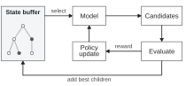
Motivation
Each model settles into its own way of solving a problem.
Search with language models tends to converge. Independent runs of the same research agent plateau in separate "idea basins". Concurrent work escapes them by forking the agent into branches that keep its workspace but start with a fresh context, then continuing from the best branch (Fork-and-Flush). Reinforcement learning with verifiable rewards narrows a model onto fewer kinds of correct solutions, even when its accuracy holds, which replaying one example of each solution mode can undo (Re:Max). And sampling answers in parallel often beats refining one answer after another, mostly because conditioning on earlier answers explores less (Gu et al.).
We see the same pattern when a model is trained on a single problem. On the Erdős minimum overlap problem, we trained four models under two objectives (GRPO and TTT-Discover), and Qwen also with a KL penalty or with random restarts. Then we looked at the techniques in the best programs at the end of each run. Each run relies on a few techniques, and the mix depends mostly on the model. Qwen and Gemma both settle on a smooth surrogate solved with SLSQP. Muse compiles its inner loops with Numba, which the others almost never do. Changing the objective barely moves Qwen and Gemma. Restarting a run does make its techniques more varied, but it throws away what the run has found.
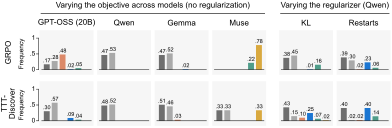
Fork-and-Flush keeps an agent's work but restarts its context. We wanted the same for a model trained on one problem, and a different model is a stronger change than a fresh context. This suggested a different kind of restart. Keep the best solutions found so far, but continue from them with a different model.
Method
MOMO restarts across models, not within one.
MOMO reuses the refinement loop above and runs it for several models in rounds. In the first round, every model refines on the problem alone, from its own buffer. When the round ends, we take the model whose buffer holds the best solution.
In the next round, every other model continues from a copy of that buffer. We reset the copy's visit counts, so the next model chooses where to search for itself rather than following where the previous model searched. Each model keeps its own trained weights from the round before, so it brings what it has already learned to someone else's solutions. Only its optimizer state is reset. The model whose buffer was copied sits the round out. We ran three rounds.
# refine() is the loop in Figure 2. Each call starts with a fresh optimizer.
winner = None
for steps in round_steps:
for model in models:
if model == winner:
continue # the winner sits this round out
if winner is None:
start = buffers[model] # round 1, its own buffer
else:
start = copy(buffers[winner])
reset_visit_counts(start)
weights[model], buffers[model] = refine(problem, weights[model], start, steps)
winner = model_with_best_solution(buffers)
return best_solution(buffers[winner])The solutions move from model to model, and the weights stay with each model. Models share nothing else, so MOMO itself does not change when another model family joins. We use three open models of about 30B parameters, Qwen3.5-27B, Gemma-4-31B and Muse-Glimmer-30B, each trained with LoRA and the same recipe.
Results
New records on three of four problems.
We ran MOMO for three rounds on two mathematical constructions (Erdős minimum overlap and the first autocorrelation inequality, AC1) and two hardware problems (circuit placement and qubit routing). On every problem, the best solution came from a lineage that passed through at least two models. On AC1, MOMO improves in every round and beats SimpleTES, but it stays behind the best agents.
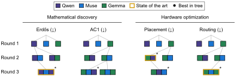
Mathematical discovery
A new bound on the Erdős minimum overlap problem.
Split the numbers 1, …, 2n into two sets of equal size, shift one set, and count how many of its numbers land on the other. The problem asks for the split whose worst shift overlaps least. Its limiting constant C5 is unknown, and any valid step function gives an upper bound, so lower is better. MOMO proves C5 ≤ 0.3808567, below the previous record, and is the first method since TTT-Discover to set it by training weights rather than by search alone.
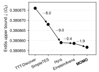
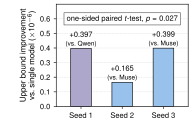
The winning lineage is Qwen, then Muse, then Qwen again, and each model contributed something different. Qwen optimized a smooth surrogate. Muse moved the function to a finer grid and restarted from noisy copies of the best one. Qwen then replaced Muse's random local search with a single optimization round, which gave the final gain. The resulting construction looks unlike the previous record.
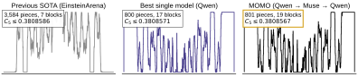
Hardware optimization
MOMO beats the circuit placement challenge winners under the challenge's own evaluator.
The Partcl/HRT Macro Placement Challenge asks for a program that places a chip's large blocks, such as memories, without overlap. Each placement gets a proxy cost that combines wirelength, density and routing congestion, averaged over 17 IBM designs. The model has to write a placement algorithm, not a single placement.
This comparison was run after the challenge closed, so MOMO was not a contest entry. To compare fairly with the two winners, ArchGen and AbuPlace, we re-ran their released code unmodified next to MOMO's program, gave every method the same time per design (3,000 seconds, under the challenge's one-hour limit), and scored every result with the challenge's own evaluator. Our re-runs of the winners land within 0.15% of their leaderboard scores.
| Method | Mean proxy cost, 17 IBM designs ↓ | Leaderboard |
|---|---|---|
| ArchGen1st place, human-designed | 0.9520 | 0.9507 |
| AbuPlace2nd place, human-designed | 0.9513 | 0.9522 |
| MOMOGemma → Qwen, 300 s search | 0.9297 | n/a |
| MOMOGemma → Qwen, 3,000 s | 0.9131 | n/a |
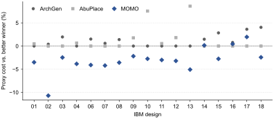
Gemma alone was the strongest single model. Qwen, continuing Gemma's programs, put more weight on routing congestion, which is where the remaining cost was.
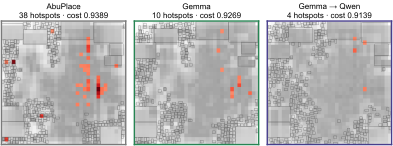
Each round's best program is itself an optimizer. Below, the best program after each round places the same IBM chip, ibm01, from the same start for 300 seconds, and we replay one run of each. All three lower the cost by 18 to 19%, and each later round ends a little lower.
With added spacing, MOMO also passes the full OpenROAD flow.
A low proxy cost does not guarantee that later chip design steps succeed. The challenge's second tier checks this by running placements through the full OpenROAD flow on four public NG45 designs. It builds the power grid, routes every wire, and measures timing. We first fixed a one-line bug in the challenge's flow script that left every block unplaced, for all methods. Out of the box, MOMO's placements then failed on three of the four designs. In our runs, the failures came where the program packs memory blocks into tight columns. Once the flow spaces them 12 µm apart, the strips left between stacked blocks were too thin for the power grid to reach. ArchGen and OpenROAD's own macro placer fail the same way on the two ariane designs.
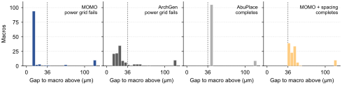
The fix leaves the search program untouched. We give it blocks enlarged by 36 µm vertically and 12 µm horizontally, so every layout it accepts keeps that spacing, while the cost is still computed with the real sizes. With this, MOMO passes the power grid on all four designs, has the lowest proxy cost on all four, and completes every design that any method completes. Its timing is mixed. It ties or beats AbuPlace on the two ariane designs and trails the other methods on mempool_tile, and every method fails global routing on nvdla.
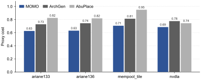
| Method | ariane133 | ariane136 | mempool_tile | nvdla |
|---|---|---|---|---|
| MOMOwith spacing | −1.584 / −97.2 | +0.219 / 0 | −2.183 / −15,054 | routing fails |
| AbuPlace | −1.584 / −98.9 | +0.172 / 0 | −2.094 / −14,434 | routing fails |
| ArchGen | power grid fails | power grid fails | −2.122 / −14,719 | routing fails |
| OpenROAD macro placer | power grid fails | power grid fails | −1.983 / −13,868 | routing fails |
Hardware optimization
The fewest SWAPs on the SimpleTES routing benchmark.
A quantum circuit often asks two qubits to interact when they are not neighbors on the processor. A router fixes this by inserting SWAP operations, and each SWAP costs three CNOT gates, so fewer is better. We use SimpleTES's routing benchmark, with 24 circuits on each of three processor layouts. The model writes the Rust policy that picks the initial layout and every SWAP.
| Method | Q20 | Heron | Willow | Total SWAPs ↓ |
|---|---|---|---|---|
| SABREheuristic | 22,714 | 50,186 | 38,352 | 111,252 |
| LightSABREheuristic | 20,063 | 45,827 | 36,802 | 102,692 |
| SimpleTESGemini 3 Pro | 13,470 | 42,396 | 31,481 | 87,347 |
| Hyraagent | 12,623 | 41,534 | 31,966 | 86,123 |
| MOMOGemma → Muse → Gemma | 12,810 | 41,540 | 31,752 | 86,102 |
Gemma alone already beats every previous routing program except the Hyra agent. Muse, continuing Gemma's programs, mostly weakened a decay penalty in Gemma's policy, and Gemma, taking Muse's programs back, polished it further. Together they edge past Hyra.
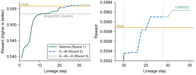
Limitations
Most results are single runs.
Most of our searches are single runs per configuration. We repeated the Erdős experiment over three seeds, and MOMO beat single-model training in each, but the other problems have one run each. MOMO does not win everywhere. On AC1 it stays behind the best agents, and on circuit placement a third round added nothing. Our OpenROAD results are single runs on four public designs, without the challenge's hidden designs or its reference baselines. They show that MOMO's placements can pass the flow, not that they would win the challenge's second tier.
We have not measured how the gains grow with the number of models, and matching the placement programs' runtime does not match the compute spent to discover them. Since models share only their solutions, more model families and more rounds are cheap to try.
Citation
Cite MOMO
@misc{konan2026momo,
title = {MOMO: Mixture of Model Optimization},
author = {Konan, Sachin and Liu, Zhuang},
year = {2026}
}